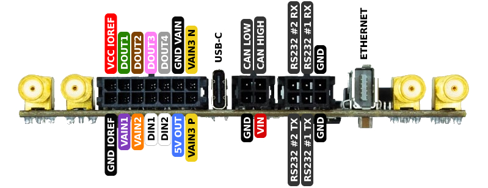
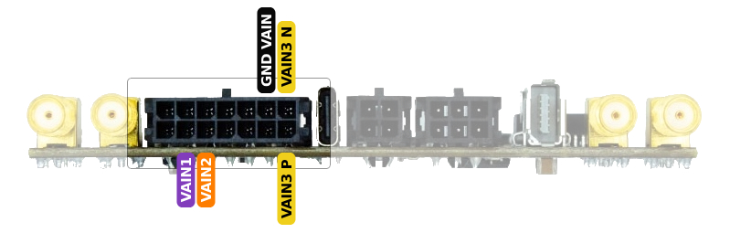
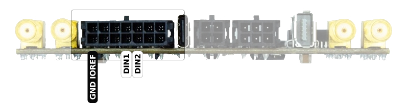
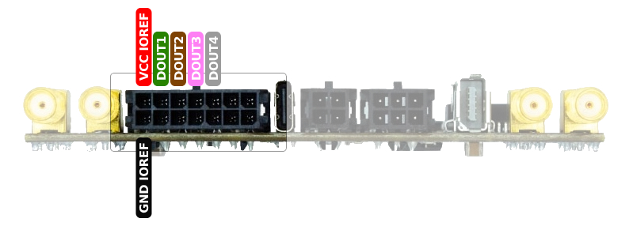
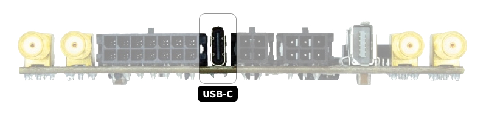
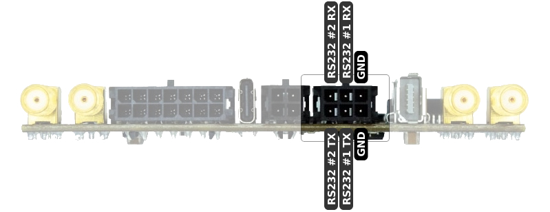
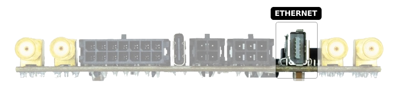
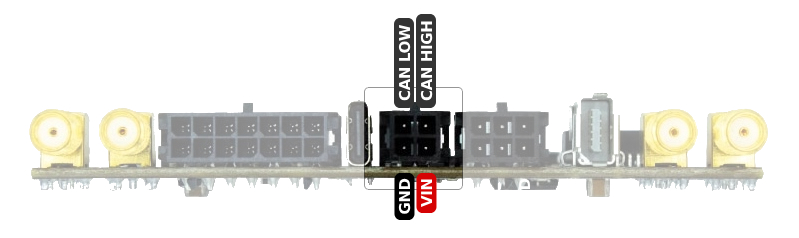
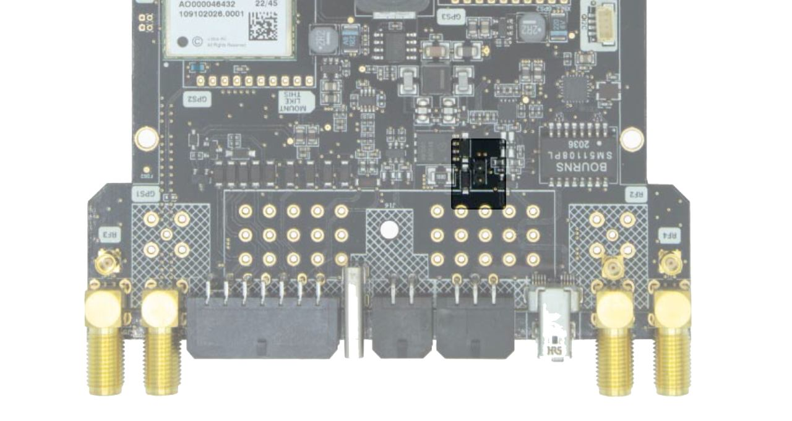

Pinout, Cables and Interfaces#
The SBC has the following interfaces:
Analog inputsDigital inputsDigital outputs (including PWM)TimepulseUSB2 x RS232EthernetCAN Bus
The picture below shows the generic pinout of the SBC connectors. The names of the pins are colored based on the cable color.

Each connector has a unique shape, so it is physically impossible to connect the cables incorrectly.
If you need to prepare your own custom wiring harness, you can find the connector part numbers here.:
Description |
Cable connector |
SBC connector |
|---|---|---|
Analog input, digital input/output/PWM |
Molex #430251000 |
Molex #430451000 |
Power, CANbus |
Molex #430250400 |
Molex #430450400 |
2 x RS232 |
Molex #430251200 |
Molex #430451200 |
Analog inputs#
The SBC provides support for analog voltage monitoring through the following input pins:
VAIN1andVAIN2: Single-ended analog inputs capable of measuring voltage levels.VAIN3 PandVAIN3 N: A differential analog input pair for more accurate voltage measurements with improved noise rejection.
These analog inputs accept voltages in the range of 0 V to +22 V with a 12-bit resolution, providing 4096 discrete levels of precision.
Additionally, the system allows you to monitor the main input supply voltage via the VIN signal.

Important
Analog input ground is connected to GND VAIN, which is different from GND. Both grounds can be connected together if needed.
For a description and examples of the methods to read these signals, please go to the AnalogIn documentation.
Digital inputs#
The SBC includes two digital input pins for reading binary ON/OFF signals: DIN1 and DIN2. These inputs accept voltage levels from 0 V to 24 V. A signal is considered ON when the voltage is ≥ 4.9 V; any voltage below that is interpreted as OFF.

Important
Digital input ground is connected to GND IOREF, which is different from GND. Both grounds can be connected together if needed.
For a description and examples of the methods to read these signals, please go to the DigitalIO documentation.
Digital outputs (including PWM)#
The SBC features four digital output pins: DOUT1, DOUT2, DOUT3 and DOUT4. Each pin can operate as a standard digital output (logic LOW/HIGH) or as a PWM output for generating pulse-width modulated signals.
The output voltage levels are referenced to VCC IOREF, which defines the HIGH level for these outputs.

Important
Digital output ground is connected to GND IOREF, which is different from GND. Both grounds can be connected together if needed.
For a description and examples of the methods to set these signals, please go to the DigitalIO documentation.
Note
For detailed connection guidelines and schematics of devices compatible with the SBC’s digital outputs, refer to the dedicated sections: DC motors, Servo motors, Stepper motors and Relays.
Timepulse#
The GNSS1 timepulse signal is accessible through a dedicated pin on the STM32. You can use it for precise timing applications, such as synchronization or timestamping.
To enable and configure this signal in your firmware, use the following code:
from sbc import GNSS1
GNSS1.timepulse.high()
GNSS1.timepulse.low()
USB#
The USB Type-C connector serves both as a power input and a data interface.

Through this single connection, you can power the board and access or configure multiple onboard components:
STM32 microcontroller: Access the MicroPython terminal for scripting and control.
Internal flash or microSD card (if inserted): Mountable as USB mass storage for file transfer.
GNSS Receivers:
GNSS1: Always available
GNSS2 and GNSS3: Available on supported models
XBEE Modules: If populated, these can be configured via USB
4G Modem: Available on variants with cellular support
Each supported device is automatically detected and made accessible over USB, simplifying development and diagnostics.
RS232#
The SBC includes two RS232 output ports for serial communication with external devices or debugging tools.
RS232 #1: Connected to the STM32 microcontroller. It can be configured freely in firmware, with a maximum baud rate of 250 kbps.
RS232 #2: Permanently wired to GNSS1’s UART2 port, providing direct access to the primary GPS/GNSS receiver.

Ethernet#
The SBC features a standard Ethernet interface, allowing you to connect the board to a local network or the Internet. This enables capabilities such as remote access, firmware updates, data transmission, or integration with networked services.

CAN Bus#
The SBC includes a CAN Bus interface, allowing it to connect to any standard CAN network and operate as a CAN node. It can send and receive CAN frames, making it suitable for integration into automotive, industrial, or embedded communication systems.

For a description and examples of the methods to interact with the CAN bus, visit the CAN Bus documentation.
Important
For reliable CAN Bus operation, proper termination is required. Standard practice is to place a 120 Ω resistor at each end of the bus, resulting in ~60 Ω across CAN HIGH and CAN LOW. You can check termination by measuring resistance between CAN HIGH and CAN LOW with the system powered off.
If your setup lacks termination, the SBC includes a built-in 120 Ω resistor—just install a jumper on the marked pins to enable it.
